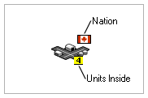
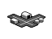

Cities
Cities
Cities are the production centers of nations. They can produce new units and money. They are the most important piece in the game, so players should attempt to control as many cities as possible.
Empires of Steel is a turn-based wargame.
Players take the role of a dictator/general in control of a nation and commanding military forces against other nations.
The goal of the game is to take control of the game world, either as a single player or as a team.
In a typical game, each player begins the game in control of a single, small, island nation.
Each nation’s technology is roughly equivalent to technology in the year 1900, and players will
know very little about the world around them. The first thing player will want to do is find
and capture the cities and resources around them. Cities are used to construct new military units, which
are used to fight other nations and capture new cities. Resources, including oil, food, and iron, are used
to support a nation's cities and military.
In multiplayer games, you will gain a great deal by forming alliances and non-aggression pacts with other players. This becomes especially important as the number of players increases. Forming these relationships can allow you to attack a third player, allow you to reduce your defenses along your common border, and engage in mutually benefitial trade.
Your nation needs raw resources. Food and Oil is required by your cities and military. Iron is necssary for construction of new units. Money is needed for research. Shortages of these three resources can undercut your military strength; Oil shortages reduce your cities’ production capability and slow your units, food shortages can cause famine which permanently weakens your cities and units, and iron shortages prevent the construction of new units. A lack of money harms technology research and prevents the upgrading of units. All resources can be bought or sold for money.
When the game begins, each player starts with technology roughly equivalent to technology in the year 1900. Nations can spend money to learn new technologies, providing it with better units. Failure to research new technology can lead to a situation where one nation futilely sends outdated units against another nation's advanced weapons.
|

|

Airfields
Infantry units can build airfields. They serve as take-off and landing locations for aircraft.
Airfields are a useful way for nations to extend the range their airforce.
|

|
Related Topics:
Table of Contents
 Resources
Resources Units
Units